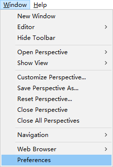
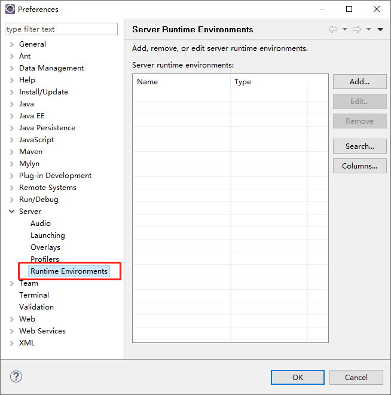
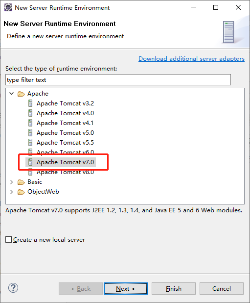
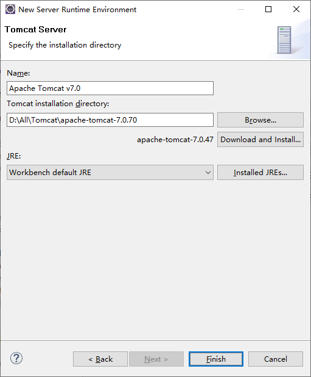
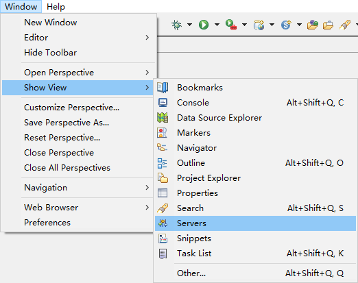
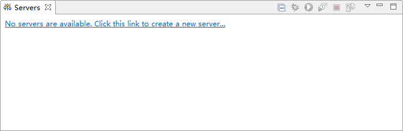
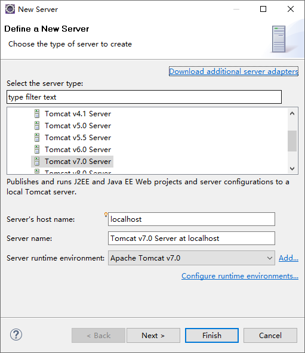
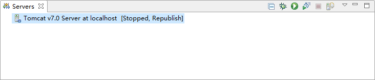
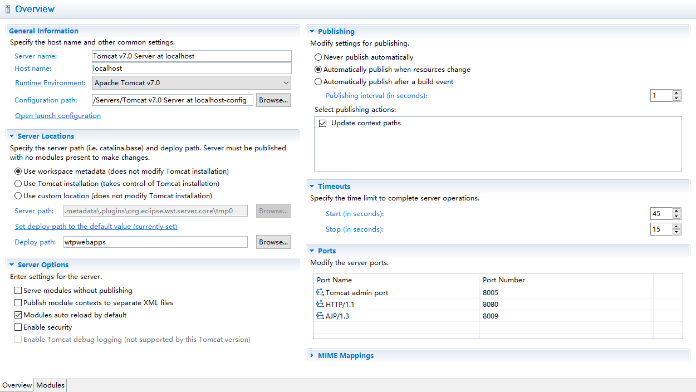

摘要：本文主要学习了如何在Eclipse里使用Tomcat服务器。
打开Eclipse的配置页面，点击菜单上的“Window”，在下拉菜单中找到“Preferences”：

找到运行环境的配置页面，如果列表里已经有了，点击“OK”即可，如果没有，点击“Add...”：

进入添加运行环境的页面，这里可以根据电脑上已有的Tomcat服务器进行选择，点击“Next”：

选择电脑上Tomcat服务器的安装路径，还可以选择JRE环境，也可以使用默认的，点击“Finish”：

可以看到列表里已经有了一个运行环境了，点击“Finish”即可，下一步是将运行环境添加到项目里。
打开Tomcat的Servers界面，可以在菜单栏的Window下Show View里找到：

界面如下：

一开始是没有服务器的，需要点击链接添加：

选择安装的Tomcat版本并且可以给服务起一个名字，如果需要将项目部署到服务器里可以点“Next”，如果不需要直接点击“Finish”即可。完成之后可以看到服务器：

双击服务器，进入配置页面：

如果选择“Use workspace metadata”，是在发布项目的时候把文件发布到Eclipse的工作目录下，缺点是路径很深，不方便查看文件。
如果选择“Use Tomcat installation”，是在发布项目的时候把文件发布到Tomcat安装目录下。
如果选择“Use”，是在发布项目的时候把文件发布到指定的一个目录。
选项“Serve modules without publishing”，如果没有勾选会将项目发布到上面设置的位置里，如果勾选了不会发布到上面的位置，而是使用当前项目的Web资源目录和class文件目录。
选项“Publish module contexts to separate XML files”，如果没有勾选会在启动的时候报 WARNING: [SetPropertiesRule]{Server/Service/Engine/Host/Context} Setting property 'xxx' to 'xxx' did not find a matching property. 这个错误，如果勾选了以后会将配置在conf/server.xml里的Context节点，单独放到/conf/Catalina/localhost/的目录下专门生成对应的xml文件。
选项“Modules auto reload by default”，如果没有勾选不会在修改代码之后自动重新加载，如果勾选会在修改代码之后自动重新加载。
选项“Enable security”，是否启用安全保护。
如果选择“Never publish automaticall”，表示不会自动部署项目。
如果选择“Automatically publish when resources change”，表示当资源发生变化时会自动部署项目。
如果选择“Automatically publish after a build event”，表示当Build事件发生之后会自动部署项目，在下面可以设置在Build事件之后多长时间自动部署项目。
可以设置Tomcat启动和停止的超时时间。
可以设置端口号。